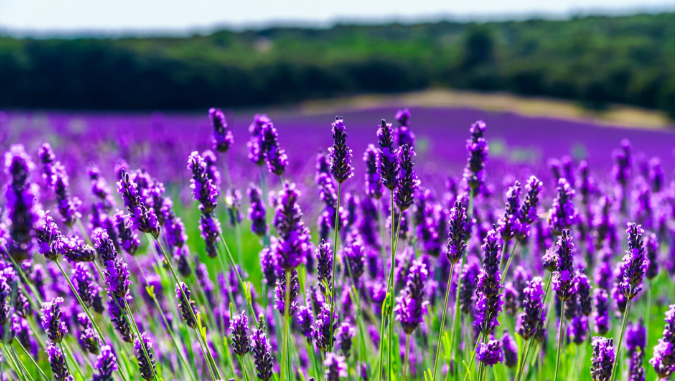

Kamilla

A kamilla az egyik legismertebb gyógynövény, amelyet főként gyulladáscsökkentő és nyugtató hatása miatt használnak...
Gyömbér

A gyömbér erős gyulladáscsökkentő és antioxidáns tulajdonságokkal bír...
Levendula
A levendula legismertebb nyugtató és alvást segítő hatásáról. Illóolaja csökkentheti a szorongást, fejfájást és segíthet az elalvásban. Teaként is fogyasztható, de fürdővízbe vagy aromaterápiás diffúzorba téve is hatékony.
Csalán

A csalán erős méregtelenítő és vízhajtó gyógynövény, amely támogatja a veseműködést és segít a szervezet salaktalanításában. Gazdag vasban, így vérszegénység esetén is hasznos lehet. Teaként fogyasztva allergiák és ízületi problémák enyhítésére is ajánlott.